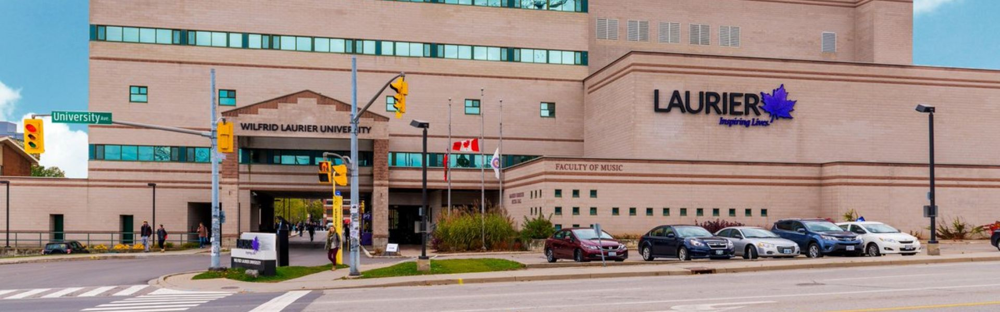

Wilfrid laurier university
Wilfrid laurier university is one of Canada’s top post-secondary institutions. Located in historic Niagara region, Brock offers all the benefits of a young and modern university in a safe, community-minded city with beautiful natural surroundings.
| WILFRID LAURIER UNIVERSITY | ||||
| Waterloo | ||||
| Brantford | ||||
| Kitchener | ||||
| Toronto | ||||
| INTAKES | ||||
| September, January, May | ||||
| Program | Credential | Intake | Campus | Duration |
| Ancient Studies | Bachelor Degree | January, May, September | Waterloo | 4 years |
| Anthropology | Bachelor Degree | January, May, September | Waterloo | 4 years |
| Applied Water Science | Bachelor Degree | January, May, September | Waterloo | 4 years |
| Archaeology & Heritage Studies | Bachelor Degree | January, May, September | Waterloo | 4 years |
| BA+Masters’ in English, History or Political Science | Bachelor Degree | January, May, September | Waterloo | 4 years |
| Bachelor Administration | Bachelor Degree | January, May, September | Waterloo | 4 years |
| Biochemistry/Biotechnology | Bachelor Degree | January, May, September | Waterloo | 4 years |
| Biochemistry/Biotechnology & Biotechnology Technician Diploma | Bachelor Degree | January, May, September | Waterloo | 4 years |
| Biology | Bachelor Degree | January, May, September | Waterloo | 4 years |
| Business Administration & Computer Science | Bachelor Degree | January, May, September | Waterloo | 4 years |
| Business Administration & Financial Mathematics | Bachelor Degree | January, May, September | Waterloo | 4 years |
| Business Administration(Laurier) & Computer Science(Uni. Of Waterloo) | Bachelor Degree | January, May, September | Waterloo | 4 years |
| Business Administration(Laurier) & Math(Waterloo) | Bachelor Degree | January, May, September | Waterloo | 4 years |
| Business Technology Management | Bachelor Degree | January, May, September | Brantford | 4 years |
| Chamber Music | Diploma | January, May, September | Waterloo | 1 year |
| Chemistry | Bachelor Degree | January, May, September | Waterloo | 4 years |
| Chemistry & Physics | Bachelor Degree | January, May, September | Waterloo | 4 years |
| Christian Studies & Global Citizenship | Bachelor Degree | January, May, September | Waterloo | 4 years |
| Communication Studies | Bachelor Degree | January, May, September | Waterloo | 4 years |
| Community Health | Bachelor Degree | January, May, September | Brantford | 4 years |
| Community Music | Bachelor Degree | January, May, September | Waterloo | 4 years |
| Computer Science(BA) | Bachelor Degree | January, May, September | Waterloo | 4 years |
| Computer Science(BSc) | Bachelor Degree | January, May, September | Waterloo | 4 years |
| Criminology(BA) | Bachelor Degree | January, May, September | Brantford | 4 years |
| Cultural Studies | Bachelor Degree | January, May, September | Waterloo | 4 years |
| Data Science | Bachelor Degree | January, May, September | Waterloo | 4 years |
| Digital Media & Journalism(BA) | Bachelor Degree | January, May, September | Brantford | 4 years |
| Economics & accounting(BA) | Bachelor Degree | January, May, September | Waterloo | 4 years |
| Economics & Financial Management(BA) | Bachelor Degree | January, May, September | Waterloo | 4 years |
| Economics(BA) | Bachelor Degree | January, May, September | Waterloo | 4 years |
| Education(BEd) | Bachelor Degree | January, May, September | Waterloo | 4 years |
| English(BA) | Bachelor Degree | January, May, September | Brantford | 4 years |
| English(BA) | Bachelor Degree | January, May, September | Waterloo | 4 years |
| Environmental Science(BSc) | Bachelor Degree | January, May, September | Waterloo | 4 years |
| Environmental Studies(BA) | Bachelor Degree | January, May, September | Waterloo | 4 years |
| Film Studies(BA) | Bachelor Degree | January, May, September | Waterloo | 4 years |
| Financial Mathematics(BA) | Bachelor Degree | January, May, September | Waterloo | 4 years |
| Financial Mathematics(BSc) | Bachelor Degree | January, May, September | Waterloo | 4 years |
| French(BA) | Bachelor Degree | January, May, September | Waterloo | 4 years |
| Game Design & Development(BFAA) | Bachelor Degree | January, May, September | Brantford | 4 years |
| Geography(BA) | Bachelor Degree | January, May, September | Waterloo | 4 years |
| Geography(BSc) | Bachelor Degree | January, May, September | Waterloo | 4 years |
| Global Studies(BA) | Bachelor Degree | January, May, September | Waterloo | 4 years |
| Health Administration (BA) | Bachelor Degree | January, May, September | Brantford | 4 years |
| Health Sciences(BSc) | Bachelor Degree | January, May, September | Waterloo | 4 years |
| History (BA) | Bachelor Degree | January, May, September | Waterloo | 4 years |
| History(BA) | Bachelor Degree | January, May, September | Brantford | 4 years |
| Human Rights & Human Diversity(BA) | Bachelor Degree | January, May, September | Brantford | 4 years |
| Indigenous Studies(BA) | Bachelor Degree | January, May, September | Brantford | 4 years |
| Kinesiology(BKin) | Bachelor Degree | January, May, September | Waterloo | 4 years |
| Labour Studies & Career Development(BA) | Bachelor Degree | January, May, September | Brantford | 4 years |
| Languages(BA) | Bachelor Degree | January, May, September | Waterloo | 4 years |
| Law & Society(BA) | Bachelor Degree | January, May, September | Waterloo|Brantford | 4 years |
| Law Degree(Uni.of Sussex,UK) & Arts Degree(Laurier) | Bachelor Degree | January, May, September | Waterloo|Brantford | 4 years |
| Mathematics(BA) | Bachelor Degree | January, May, September | Waterloo | 4 years |
| Mathematics(BSc) | Bachelor Degree | January, May, September | Waterloo | 4 years |
| Medieval & Medievalism Studies | Bachelor Degree | January, May, September | Waterloo | 4 years |
| Music Therapy(BMT) | Bachelor Degree | January, May, September | Waterloo | 4 years |
| Music(BMus) | Bachelor Degree | January, May, September | Waterloo | 4 years |
| North American Studies | Bachelor Degree | January, May, September | Waterloo | 4 years |
| Opera | Diploma | January, May, September | Waterloo | 1 year |
| Philosophy(BA) | Bachelor Degree | January, May, September | Waterloo | 4 years |
| Physics(BSc) | Bachelor Degree | January, May, September | Waterloo | 4 years |
| Policing | Bachelor Degree | January, May, September | Waterloo|Brantford | 4 years |
| Political Science(BA) | Bachelor Degree | January, May, September | Waterloo | 4 years |
| Psychology(BA) | Bachelor Degree | January, May, September | Waterloo | 4 years |
| Psychology(BA) | Bachelor Degree | January, May, September | Brantford | 4 years |
| Psychology(BSc) | Bachelor Degree | January, May, September | Waterloo | 4 years |
| Public Health(BASc) | Bachelor Degree | January, May, September | Brantford | 4 years |
| Religion & Culture(BA) | Bachelor Degree | January, May, September | Waterloo | 4 years |
| Social & Environmental Justice(BA) | Bachelor Degree | January, May, September | Brantford | 4 years |
| Social Work(BSW) | Bachelor Degree | January, May, September | Brantford | 4 years |
| Sociology(BA) | Bachelor Degree | January, May, September | Waterloo | 4 years |
| Spanish(BA) | Bachelor Degree | January, May, September | Waterloo | 4 years |
| User Experience Design(BDes) | Bachelor Degree | January, May, September | Brantford | 4 years |
| Women & Gender Studies | Bachelor Degree | January, May, September | Waterloo | 4 years |
| Youth & Children’s Studies(BA) | Bachelor Degree | January, May, September | Brantford | 4 years |